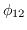
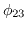
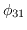
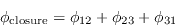

You may tire of all this listing of numbers, and would prefer to
make some plots. The task uvplt provides a variety
of choices when plotting visibilities, and ancillary information
associated with the visibilities. It has rather a lot of inputs, so
read the help file first for the details. We discuss some of the
keywords below and then give a couple of examples.
- vis specifies the visibility datasets to plot. It can take
multiple dataset names, each separated by a comma, and wildcard
expansion (via an asterisk) of file names is supported.
- line and select are the standard visibility selection
keywords. The default for the line parameter is the first channel,
so be careful if you are plotting a dataset with many channels; you would
need to explicitly select the channels you require, especially as in
multi-channel datasets the first few channels are either rubbish or
flagged. The default for select
is all the data.
- Select the desired polarization or Stokes parameter with stokes.
Conversions from linear (or circular) polarizations to Stokes parameters
are supported. You can have any combination that you like on one plot,
but they will all be plotted with the same symbol. This generally
does not matter as any signal will make the distinctions clear and colours are
used on devices that support it.
- axis is used to tell uvplt
what to plot on each axis.
You can put any of the allowed choices (see the help file) on either of
the axes. For example, you could set axis=imag,real to plot the
imaginary part of the visibility on the x-axis, and the real part on the
y-axis. Such a plot is very useful to examine calibrator data.
The default is to plot visibility amplitude versus time.
- xrange and yrange specify the plot ranges for the
x- and y-axes. If they are unset, the plot(s) are auto-scaled.
Generally, each of these keywords takes two values. However,
if the corresponding axis is time, then you must specify eight
values; a day, hour, minute and second for the start and stop
times.
- You can average the plotted quantities in time by setting average in minutes (but see the options keyword for exceptions to
this unit). Baselines and polarizations are averaged separately (unless
options=avall), but channels are not - they are all lumped in
together.
The complex visibilities are vector averaged by default, and the real
quantities are scalar averaged by default. For example, if you ask for
an averaged amplitude or phase, the real and imaginary parts of the
visibilities are averaged, and then the amplitude or phase formed. If
you ask for, say, u versus time, u is scalar averaged. You can
override the vector averaging by setting options=scalar; a scalar
averaged amplitude is useful if the phase is winding rapidly. A scalar
averaged phase is pretty meaningless under most conditions.
Averaged points are plotted with filled-in circles rather than dots,
unless options=dots.
- If you plot, say, amplitude or phase versus time, you may find the
application of Hanning smoothing useful to knock off the rough edges,
rather than applying box-car smoothing (which is what you get
when you average in time). Set hann to an odd number.
- If you do not want to see all the selected points, you can set inc to plot every incth point that would normally have been
selected. For example, it is useful for plotting u versus v. Be
careful of a value of inc that divides exactly into the number of
baselines in time-ordered data (you end up seeing the same baselines
over and over).
- uvplt has a vast complement of options. They
are all described in the help file. We will mention a few
of them here.
- Like most of the visibility tasks, it has nocal, nopol and
nopass to turn off the calibration tables, which, by default, are
applied if they exist. Miriad will tell you when it applies any
calibration table.
- By default, uvplt
puts each baseline on a separate sub-plot on
the page (see nxy below). Setting options=nobase means that
all baselines go on the same plot.
- options=scalar instructs uvplt
to do scalar averaging in
time.
- On occasion, you may not wish to time average baselines or
polarizations separately. Setting options=avall instructs
uvplt
to average together everything that is to be plotted on a separate
sub-plot.
- options=rms instructs uvplt
to plot error bars on
any time-averaged quantities. However, note that error bars are not yet
implemented for vector averaging.
- By default, if you plot many sub-plots (one for each baseline), all the
sub-plots are displayed with the same axis ranges, which encompass the
data on all the sub-plots. Setting options=xind or options=yind (or both) scales that axis on each sub-plot independently.
- uvplt
has an interactive mode invoked by setting
options=inter. This gives you a chance to redraw the plot
with different axis ranges, without having to read all the data in
again. This option also prompts you for a new plot device, so
that following display and range refinement on your workstation,
you can them make a hard copy without re-running uvplt.
- Select the PGPLOT device to plot on with a command such as
device=/xs (plot on local X-window) or device=amp.plt/ps
(write plot to a PostScript file called `amp.plt').
- Specify the number of sub-plots in the x- and y-directions
with a command such as nxy=4,3.
The following example plots u versus v, and -u versus -v,
selecting channels at the start, middle and end of a band of 32 channels
(so that the u-v coverage benefit obtained across the band can be
seen).
| UVPLT |
| vis=vela*.uv |
Specify visibility dataset(s) |
| line=channel,3,2,1,15 |
Plot channels 2,17,32 |
| select |
Leave unset for all data |
| stokes=xx |
u-v coverage same for all polarizations |
| axis=uc,vc |
Plot u-v and conjugate u-v plane |
| xrange |
Auto-scale |
| yrange |
Auto-scale |
| average |
No averaging |
| hann |
No Hanning |
| inc=1 |
Plot every point |
| options=nobase |
All baselines on one plot |
| device=/xs |
Plot on local X-window |
| nxy=1 |
One sub-plot only please |
| size |
Default character sizes |
The next example shows how to plot a scatter diagram (real vs imaginary)
from a single-channel dataset for the Q, U and V.
polarizations, with all baselines plotted on the one plot. This is a
quite useful plot to make of calibrated calibrator data. Because you
are asking for Stokes parameters, it is assumed that a calibration has
been made (the calibration tables will be applied by uvplt
and a
reminder issued) or that you converted to Stokes parameters along the
way (e.g. with the AIPS task ATLOD or with uvaver).
| UVPLT |
| vis=vela.uv |
Specify visibility dataset |
| line |
Plot the first channel only |
| select |
Leave unset for all data |
| stokes=q,u,v |
Select Stokes Q, U and V |
| axis=real,imag |
Is the default |
| xrange |
Auto-scale |
| yrange |
Auto-scale |
| hann |
No Hanning |
| inc |
Plot all points |
| options=nobase |
Scalar averaging |
| device=/xs |
Plot on local X-window |
| nxy=1 |
1 plot per page |
| size |
Default character sizes |
Task closure
is another useful plotting task. It is
most useful for plotting
the closure phases of point sources. The closure phase
of an object is the sum of the baseline phases around a triangle. For
example, for antennas 1, 2 and 3 we measure three baseline phases
,  and . It can be shown that
the closure phase, which is the sum of these three baseline phases

will be independent of any antenna-based gain errors (atmosphere and
instrumental). This quantity will not be affected by Miriad's
antenna calibration process. Additionally for a point
source (or any source with 180 degree rotational symmetry) the closure
phase should be zero. Plotting the closure phase of a calibrator
is thus a way of checking the quality of the data. If the closure
phase is large, the data are probably bad, or there is some calibration
error that is not accounted for in Miriad's antenna-based model.
Task closure
plots averages of closure phases (actually it
averages together triple products and then takes the phase of
this). The averages are taken over the the different correlator
channels and polarizations, and optionally over time.
The inputs to closure
are simple enough.
See the help file for more information. Typical inputs to
closure
are:
| CLOSURE |
| vis=vela*.uv |
Specify visibility dataset(s) |
| line= |
Set the channels of interest. |
| select |
Leave unset for all data |
| stokes=xx |
Closure phase for XX |
| yrange |
Auto-scale |
| options=notrip |
Plot all closure phases on one plot |
| device=/xs |
Plot on local X-window |
| nxy=1 |
One sub-plot only please |